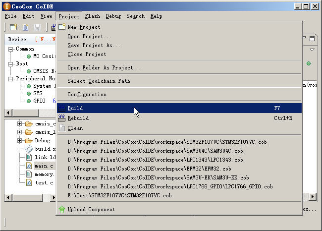

Building project
To build a project using CoIDE, you only need to perform the following steps:

1. Select
Project > Build
. If necessary, you can select
Rebuild
to recompile your project or select
Clean
to clean-up the project have compiled.
2. Viewing compile information in the
Console window
.